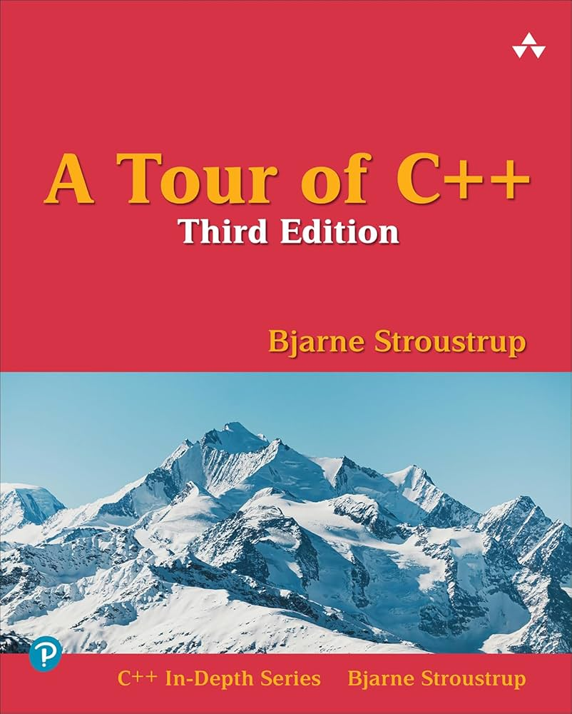
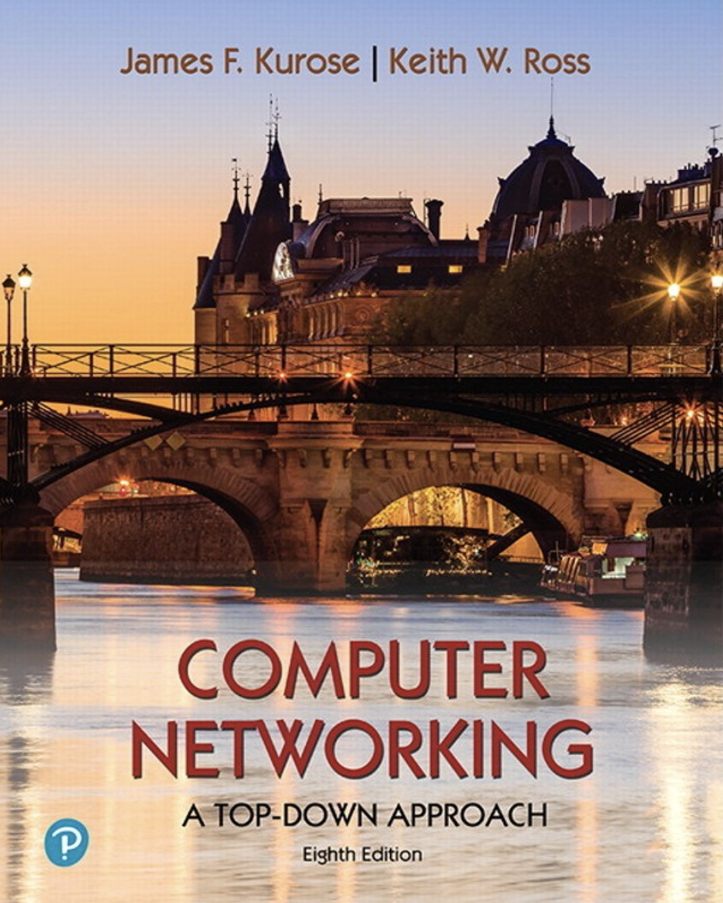

A Tour of C++
Bjarne Stroustrup
A compact yet deep dive into modern C++. Gave me intuition for idioms, memory control, and the evolution of the language.
A small library of books and long-form technical materials that enjoyed reading and learning from.

Bjarne Stroustrup
A compact yet deep dive into modern C++. Gave me intuition for idioms, memory control, and the evolution of the language.

Remzi & Andrea Arpaci-Dusseau
One of the clearest resources on systems programming. Taught me to see memory, concurrency, and scheduling as deeply human-designed tools.

James F. Kurose & Keith W. Ross
A rare textbook that feels like a guided tour through the Internet’s architecture. Its top-down narrative helped me truly visualize how protocols and systems interlock.